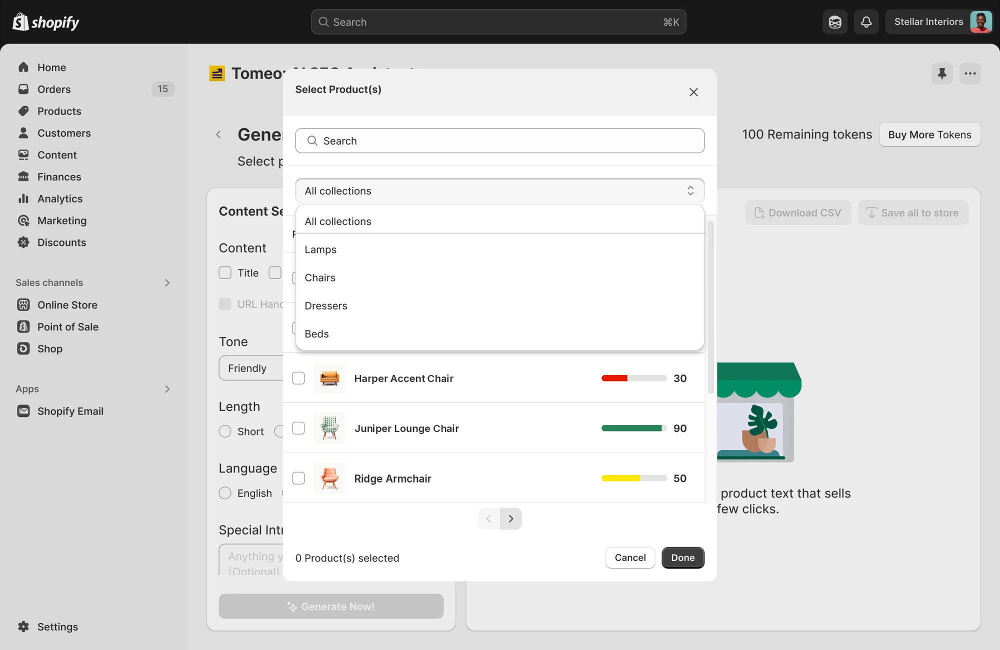
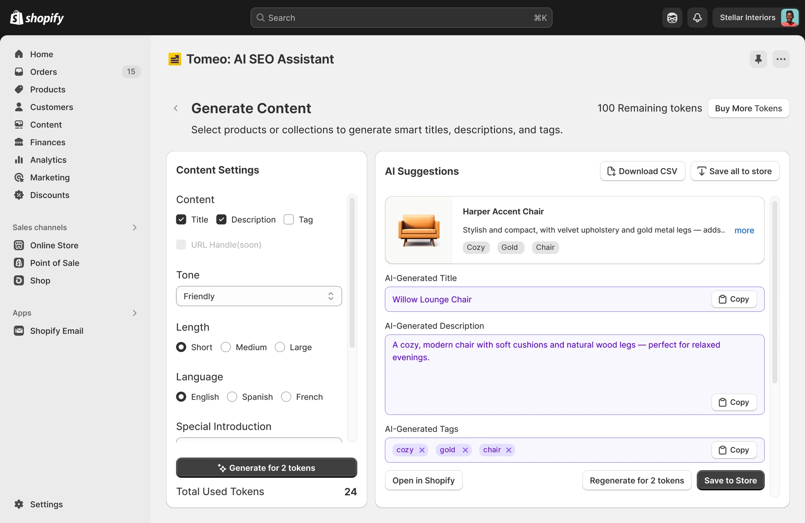
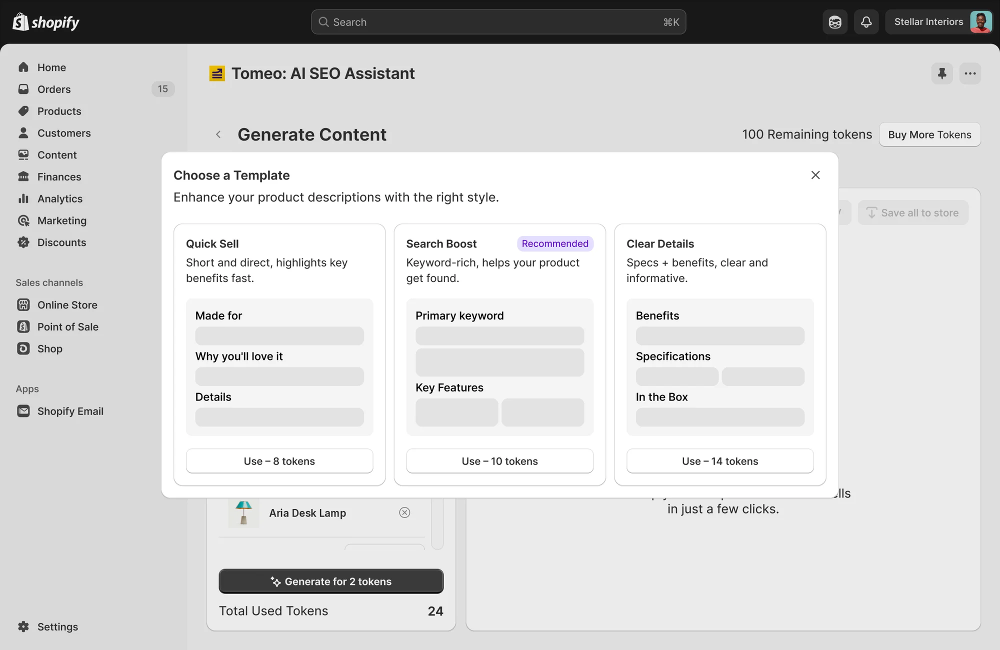
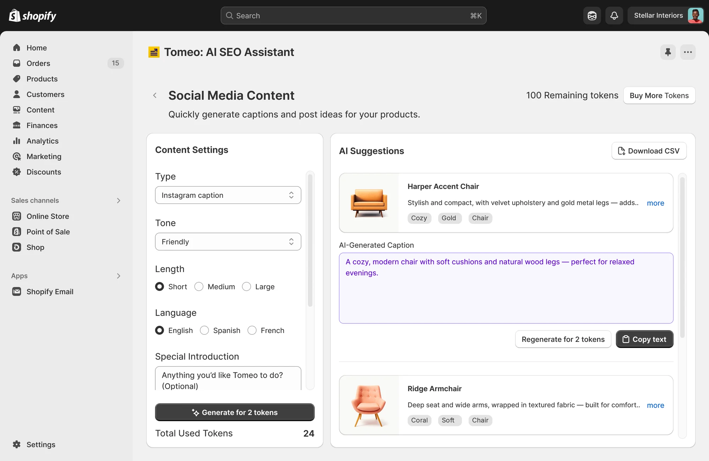
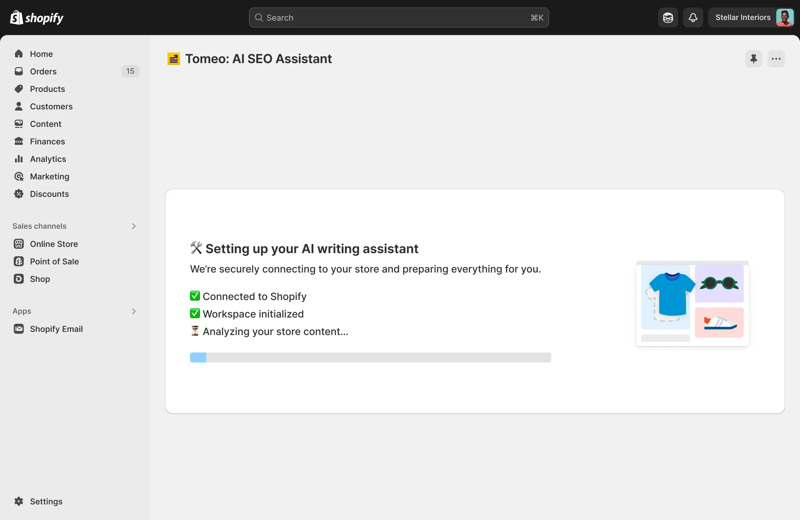
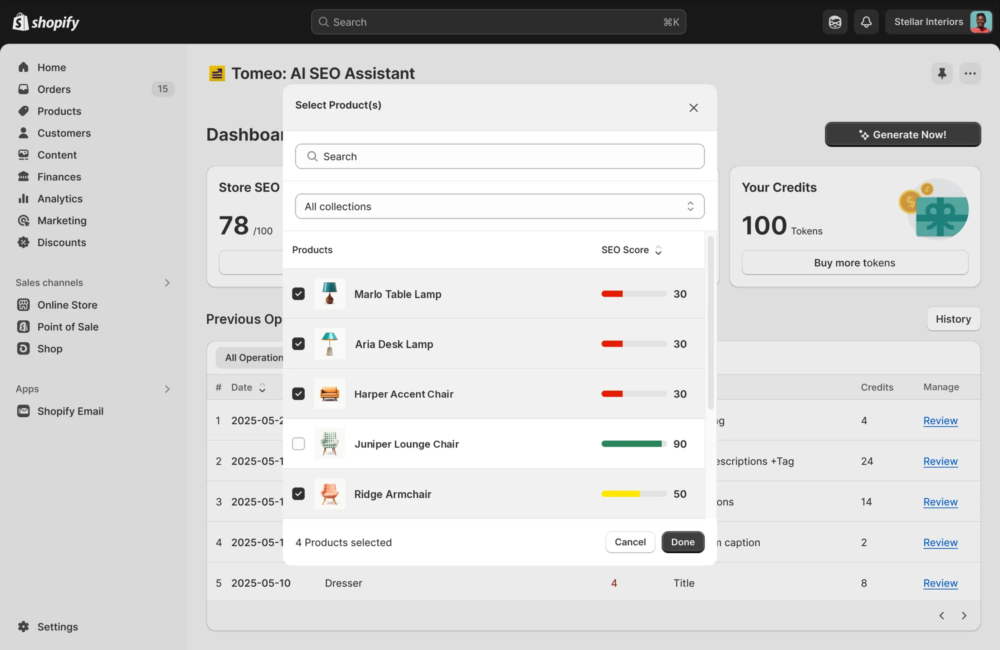
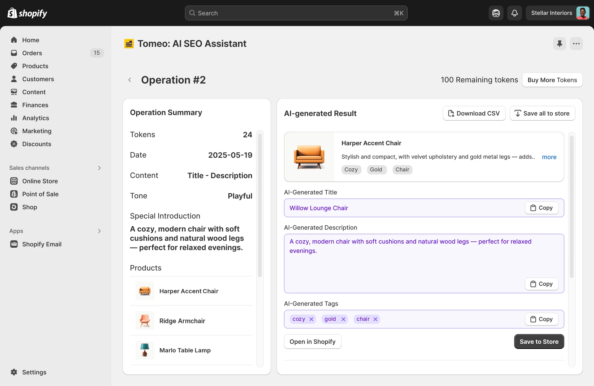
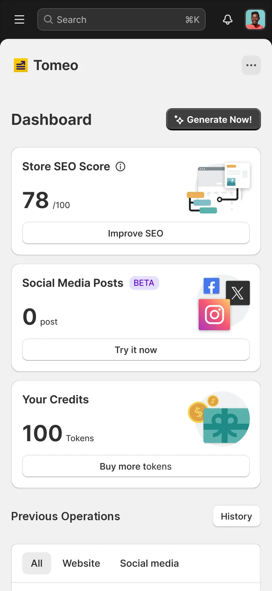
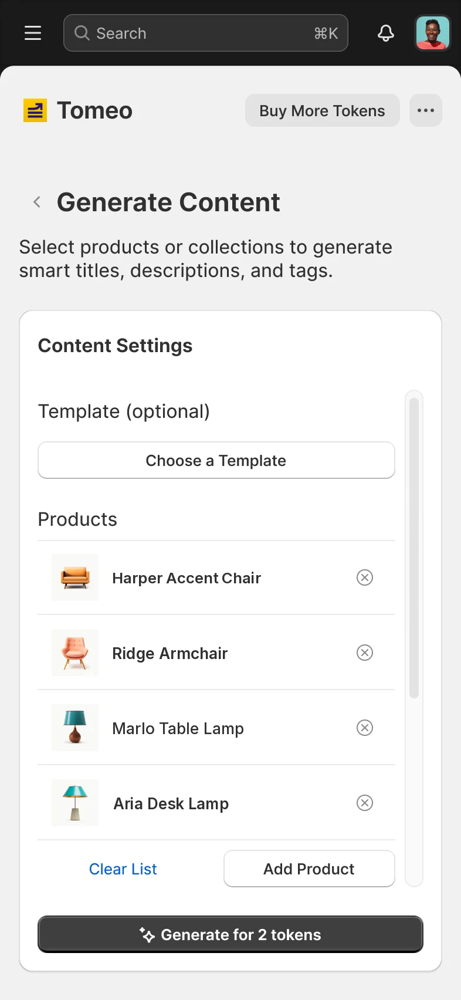
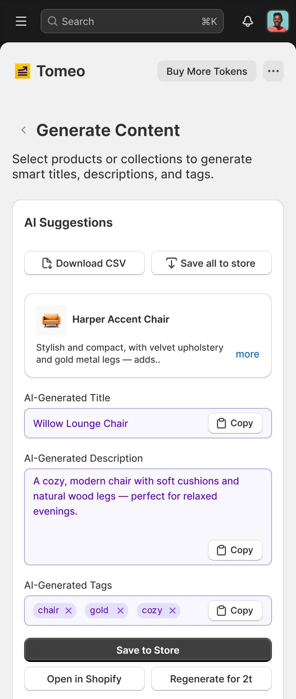

Running a store means writing all the time
Every product needs a title, a description and tags. Every page needs SEO metadata. Every launch needs a few social captions. For a small store, the person writing all of it is usually the owner.
AI copywriting apps already existed on the Shopify App Store, and merchants were using them. But the reviews told a mixed story.
What merchants praised, and what they complained about
We had no access to Shopify merchants, so the research came from two secondary sources: what merchants wrote about competing apps, and our own evaluation of those apps.
First, I reviewed 17 AI copywriting and SEO apps on the Shopify App Store and read through hundreds of their reviews. For each app, I listed what merchants praised and what they complained about, then counted how many apps each theme came up for.
Number of apps, out of 17, whose reviews raised each theme.
Three things stood out:
Heuristic evaluation of competing apps, with the whole team
Then the whole team, including the PM and both developers, used the leading competing apps and evaluated them against Nielsen's 10 usability heuristics. Two problems kept coming up:
Merchants didn't need more features. They needed something that works on the first try: fast, simple, and with nothing reaching the store until they approve it.
Three goals to design against
Four decisions that shaped the product
Each one answers a finding from the reviews or the heuristic evaluation:
Three steps: select, generate, review
The whole product is built around one path. Pick products, or a whole collection. Generate. Review the suggestions, then copy them or save them to the store. Everything else is secondary.


Why review comes first: four of the 17 apps had reviews about lost descriptions, images or tags, and our heuristic evaluation found the same problem: actions you can't undo. In Tomeo, nothing is written to a product page until the merchant saves it.
Templates instead of a settings form
Tone, length, language and content type are real choices, but for a first-time user they are four decisions before seeing any result. So the settings panel opens with sensible defaults, the optional instructions sit at the bottom, and templates turn the rest into one choice.

Progressive disclosure got the most attention in our design reviews. With no merchants to test with, we walked a few non-technical people around us through the prototype, informally, and watched where they stopped. The goal was that someone could finish without touching a setting, and still find it when they wanted it.
The trade-off: a template hides some control. We kept the full settings panel one step away, so experienced merchants lose nothing.
Make social captions a first-class feature
Only one competitor wrote social posts, so this was a gap, not a nice-to-have. Social captions got their own card on the dashboard and their own page. A merchant can select one or several products and get Instagram or Facebook captions for each, in the same tone and language settings as the rest of the app.
The trade-off: a gap is not proof of demand. Only one app offering social posts could also mean merchants don't want them from this kind of tool. So the feature is labeled Beta on the dashboard, with its own card, so its use could be measured on its own.

Design with Polaris, not around it
Tomeo is built from Shopify's Polaris components: the same page layout, cards, buttons, modals and tables merchants see everywhere else in their admin. It looks like part of Shopify, merchants already know how it behaves, and developers could build from components they already had, which made handoff faster.
The trade-off: less room for a visual identity. Tomeo's character lives in its illustrations, its yellow mark and its copy, not in custom components.
Around the core flow
Everything else in Tomeo exists to get merchants into the core flow, or to bring them back to it.
Setting up while the merchant watches
Connecting the app takes a few seconds. Instead of an empty dashboard, the merchant sees each step happen: connected, workspace ready, store content being analyzed.

Three numbers and one button
The dashboard answers three questions: how is my store doing in search, have I posted anything, and how many credits are left. Each card has one action, and Generate Now leads straight into the core flow. Below it, every past operation stays one click away. It's the screen at the top of this page.
Start with the products that need it most
Choosing which products to fix is the hard part for a non-specialist. Tomeo scores each product, so the weakest ones stand out and the merchant can start there.

Every run is saved, with its settings
Each operation keeps its products, tone, content type and token cost. A merchant can come back later, review the results and save the ones they skipped.

The same flow in mobile admin
Merchants also run their stores from Shopify's mobile app, so every screen was also designed for phones.



Tomeo charges in tokens, the model merchants complained about
Credit limits and surprise charges came up for 6 of the 17 apps, and Tomeo also uses tokens. Design couldn't change what Tomeo charges, but it could change when the merchant sees the cost. Every Generate and Use button shows its price in tokens before it's clicked, the remaining balance sits next to the page title, and every operation records what it cost.
Whether that is enough is something only real usage would have shown, which is why it's the first thing I would have tested next.
Stopped to focus on a bigger product
In October 2025, we stopped work on Tomeo to put the team's time into Callingow, a more complete product that we plan to publish on the Shopify App Store as well. Tomeo never launched, so there are no usage numbers.
We also never interviewed or tested with real merchants. Everything above rests on secondary research: what merchants wrote about other apps, and what we found using those apps ourselves. The decisions are well-grounded hypotheses, not validated ones.
What I would have measured after launch
These are the numbers I would have watched first:
Simplicity is a feature you can compete on
What I would do differently
The full designs are available on request.